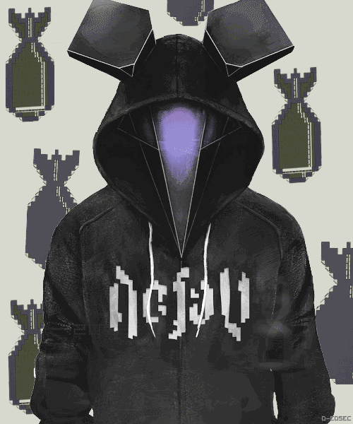
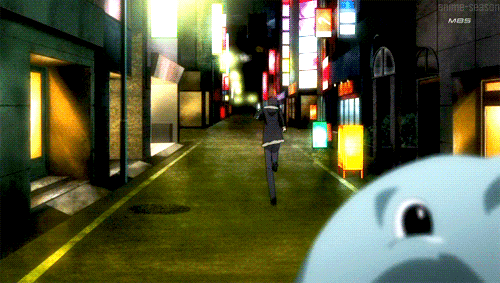

Olá,esse site é meu diário de bordo sobre as atividades de artes e os relátorios das aulas, como faço informática tive essa ideia de fazer um site como trabalho, e sim eu fiz toda a programação ,claro que tive ajuda de algumas pessoas e irei agradecer elas no final porém a programação eu fiz sozinho mesmo,kkkkk bem professora e quem esteja lendo espero que gostem do site,deu um trabalho para fazer mas foi divertido até.
Os irmãos Messa por me mostrarem a programação de divisão. O Alex( ͡° ͜ʖ ͡°) e a Duda por me ajudarem no design do trabalho. O João Marcos e o Gustavo por terem me ajudado nos dias que faltei me dizendo o que ocorreu na aula. A professora Nádia por ensinar mais coisas de html que não sabia(como adicionar vidéo entre outras coisas. A Máisa(sim você professora,pois por causa desse trabalho estou treinando HTML também) e aprendendo mais sobre arte(eu acho -'). O Minuetto por ser minha dupla e me ajudar também em HTML(Nóis Minetto tamo junto RR)
*Reação do Minetto ao receber agradecimento*
É só isso então espero que gostem do diário... fui
